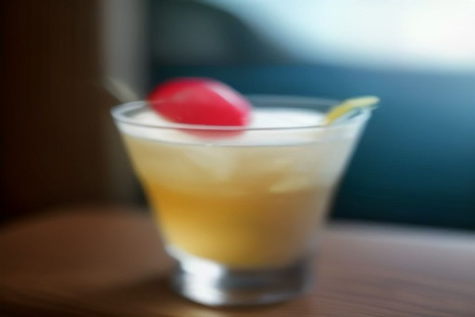
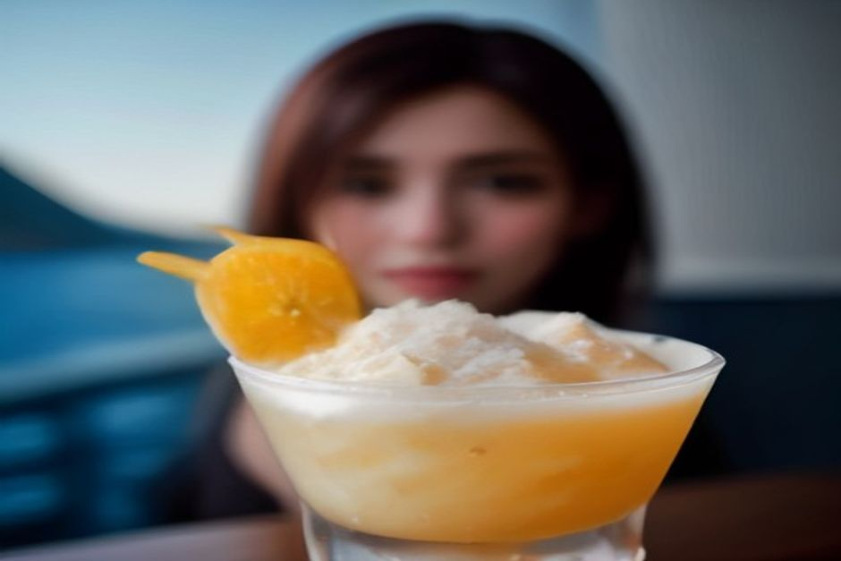

Nikita is Madeira's other signature drink — a thick, sweet blend of pineapple, vanilla ice cream and pale beer that tastes closer to a milkshake than a cocktail. It was invented in Câmara de Lobos in 1985 and named after an Elton John song. Here's what's actually in it, where it came from, and where to order one that's true to the original.
What is Nikita, exactly?
Nikita is a blended Madeiran drink built around three things: pineapple (usually juice, sometimes pineapple ice cream too), vanilla ice cream, and a pale lager, mixed until it's thick, foamy and pale gold. Some bars add a splash of white wine on top instead of, or alongside, the beer. The result sits somewhere between a boozy milkshake and a piña colada with the rum swapped for beer — sweet, cold, and dangerously easy to drink on a hot afternoon.

Where was Nikita invented?
At a small bar on the harbourfront of Câmara de Lobos, the fishing village just west of Funchal. In 1985, a bartender named Marcelino — recently back from Brazil and reportedly experimenting with something between a batida and a piña colada — blended pineapple, ice cream and beer while Elton John's 1985 single "Nikita" was playing on the radio. The name stuck. The bar where he created it, then called Farol Verde, still stands and now trades as A Casa do Farol, with a sign over the door reading "The Original Nikita Since 1985."
Why does Câmara de Lobos claim it?
Because that's genuinely where it started, and the village has leaned into it ever since. Câmara de Lobos is already Madeira's best-known fishing village — the place João Gonçalves Zarco first anchored in 1419, and where Winston Churchill famously painted the coloured boats — and Nikita gave it a second, sweeter reason to stop. Several bars along the same stretch of harbour now serve their own version, and locals will happily argue over whose is closest to Marcelino's original.
Is Nikita alcoholic, and how strong is it?
The traditional version is, but only mildly — the beer (and any wine) is diluted by a generous scoop of ice cream and a good measure of pineapple juice, so it drinks far softer than its ABV-by-volume ingredients suggest. Most bars also keep a non-alcoholic version on the menu, swapping the beer for a soft drink or extra juice, which is why you'll see families and kids drinking it just as often as anyone on holiday.
Nikita or poncha — which should you try first?
They're not really competing for the same moment. Poncha is Madeira's sharper, boozier original — sugarcane rum beaten with honey and citrus until it froths — and it's an acquired taste for some first-timers. Nikita is the easier entry point: cold, sweet, and closer to a dessert than a drink, which is exactly why plenty of visitors end up liking it more. Order poncha for the local ritual and Nikita for the afternoon treat, and you've covered both sides of Madeira's drink culture in one trip.
Where can you actually get a good Nikita?
Start in Câmara de Lobos, where it was born — the bars along the harbour, within sight of the fishing boats, are the closest you'll get to the original. Funchal's Zona Velha and the Lido promenade both have it on menus too, usually served in a tall glass with a straw and a paper umbrella. It's a land-based treat rather than something you'll find poured on a boat, but Câmara de Lobos itself is the first stop on Chifbay's Day Trip — reason enough to plan a Nikita on the harbourfront either before boarding or after you're back on dry land.
A drink invented because a song was playing on the radio — that's about as Madeiran an origin story as it gets.
Nikita isn't old, and it isn't fancy. It's a 1985 bar invention that turned into a village landmark, and it's still one of the most purely enjoyable things to order on a hot Madeira afternoon — proof that not every island tradition needs centuries behind it to earn its place on the menu.
